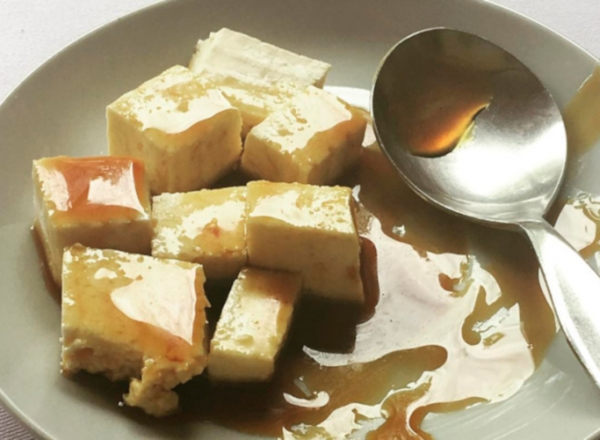

Ingredientes
- 250g de queso
- 3 cucharadas de miel
- 1 cucharada de orégano seco
Procedimiento
Cortar el queso en cubos pequeños, luego colocarlos en una bandeja y rociarles miel de manera uniforme en cada cubito y al final rociar el orégano seco sobre los cubitos de queso con miel.
Imagen de Referencia
